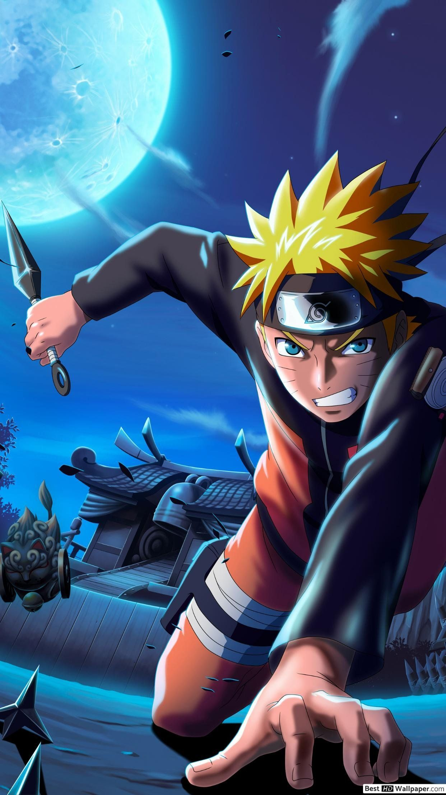

| Naruto is a ninja-in-training whose wild antics amuse his teammates. But he's completely serious about one thing: becoming the world's greatest ninja! As the battle against the Tailed Beast-targeting Akatsuki rages on, the heroic sibling battle between Sasuke and Itachi eventually concludes. |  | A family is attacked by demons and only two members survive - Tanjiro and his sister Nezuko, who is turning into a demon slowly. Tanjiro sets out to become a demon slayer to avenge his family and cure his sister. |
|
| Saitama is a self-proclaimed superhero who can defeat every opponent that he encounters with a single punch. He searches for a worthy opponent after growing bored by a lack of challenge in a world filled with superheroes and villains. While fighting evil, he meets his student, Genos. |
|
The story focuses on a young boy named Gon Freecss who discovers that his father, who left him at a young age, is actually a world-renowned Hunter, a licensed professional who specializes in fantastical pursuits such as locating rare or unidentified animal species, treasure hunting, surveying unexplored enclaves |
|
| Set in a world where people are born with the ability to use magic, the story follows Asta, a young boy without any magic power who is given a rare grimoire that grants him anti-magic abilities. With his fellow mages from the Black Bulls, Asta plans to become the next Wizard King. |
|
Follows the adventures Sung Jinwoo in a world that is constantly threatened by monsters and the evil forces. In his battles Sung transforms himself from weakest hunter of all mankind to one of the strongest hunters in existence. |
|
| ONE PIECE is a legendary high-seas quest unlike any other. Luffy is a young adventurer who has longed for a life of freedom ever since he can remember. He sets off from his small village on a perilous journey to find the legendary fabled treasure, ONE PIECE, to become King of the Pirates! |
|
Starting at Furin High, a school known for student brawlers who protect their town, Haruka seeks to battle his way to the top. Haruka Sakura has no interest in weaklings, only the strongest fighters. |
|